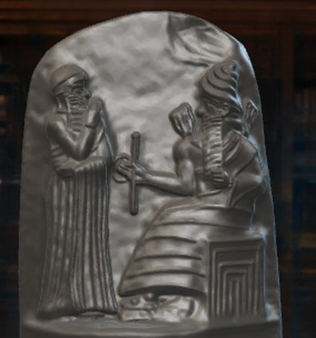

A black basalt pillar over 2 metres tall, carved with about 282 laws of Babylon. At the top, King Hammurabi stands before Shamash, the god of justice.
3D scan: "The Hammurabi Code at The Louvre, Paris" by Scan The World (MyMiniFactory), CC BY-NC-SA. Sources: Musée du Louvre; Wikipedia, "Code of Hammurabi"; Smarthistory.
Hammurabi was the sixth king of the First Dynasty of Babylon, a city on the Euphrates River in what is now Iraq. Over a long reign he conquered his rivals and joined much of Mesopotamia into one kingdom. Near the end of his reign he had his laws carved on stone pillars like this one and set up for people to see.
The scene at the top is the stele's headline. Shamash, the sun god and god of justice, sits on a throne, with flames rising from his shoulders and mountains under his feet. He holds out a rod and a ring, symbols of royal power and justice. Hammurabi stands before him, smaller, his hand raised to his mouth in prayer. The message: the king's laws come with the blessing of the god of justice.
Below the scene are about 4,130 lines of cuneiform in the Akkadian language. A prologue and an epilogue praise Hammurabi and say the gods chose him "to prevent the strong from oppressing the weak." In between come 282 laws, each built the same way: if someone does this, then this is the punishment. They cover theft, trade, farming, marriage, inheritance, building, and doctors' fees.
The stele probably first stood in Sippar, the city of the sun god. About 600 years later, around 1158 BCE, the Elamite king Shutruk-Nahhunte raided Babylonia and carried it off to his capital, Susa, as war loot. Someone there began scraping away several columns of laws near the bottom, probably to carve a new victory message, but never finished. French archaeologists led by Jacques de Morgan dug it up at Susa in 1901–1902, in three pieces, and it went to the Louvre in Paris.
3D model: "The Hammurabi Code at The Louvre, Paris" by Scan The World (MyMiniFactory), licence CC BY-NC-SA. Sources: Musée du Louvre, "The Code of Hammurabi"; Wikipedia, "Code of Hammurabi"; Smarthistory; Ministère de la Culture, Jacques de Morgan archive.